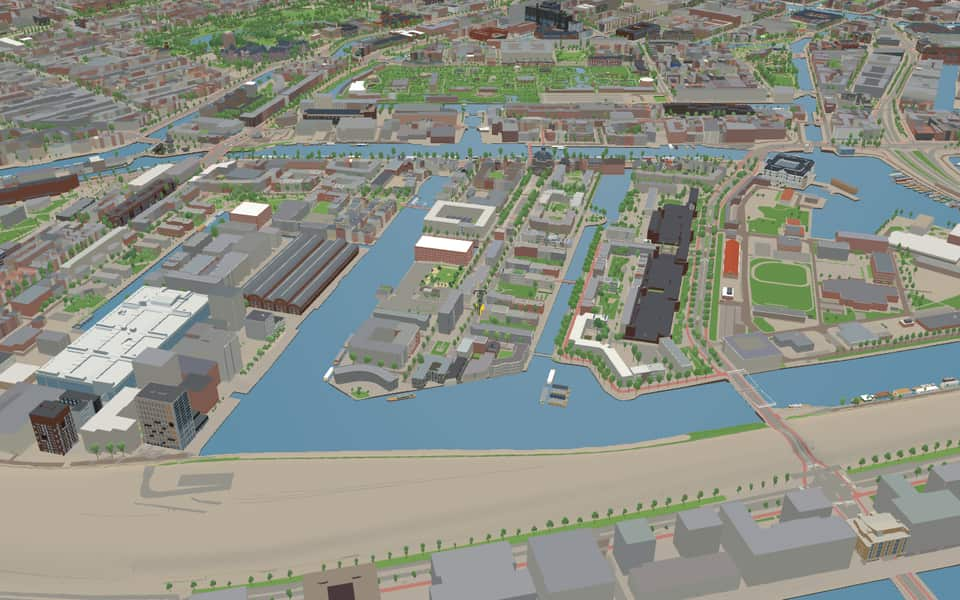
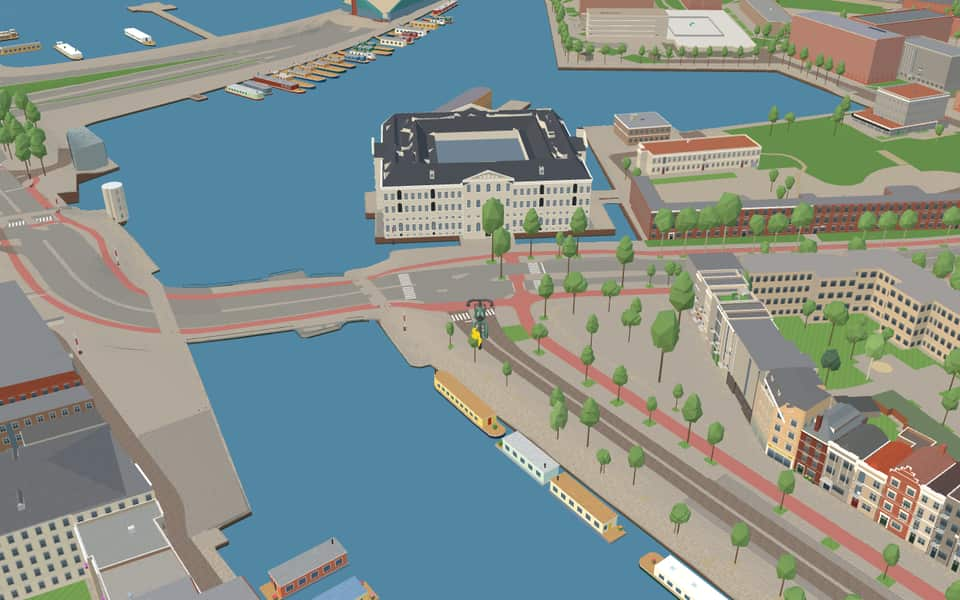
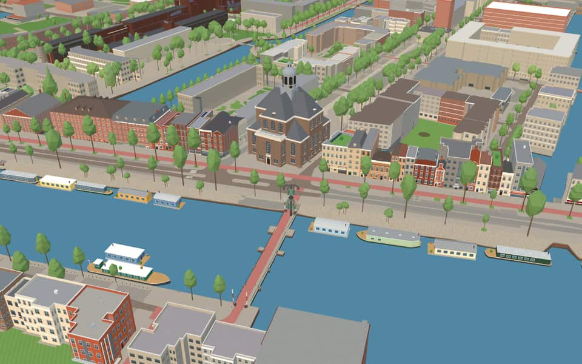
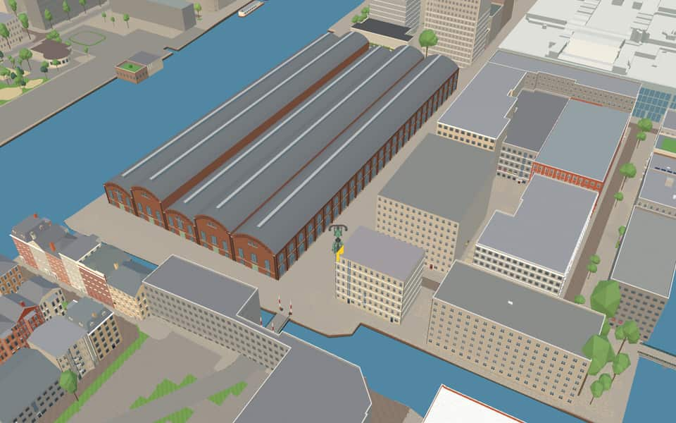

Quarter · Amsterdam
Oostelijke Eilanden
Oostelijke Eilanden (lit. Eastern Islands), also known as Oostelijke Eilanden en Kadijken (Eastern Islands and Quays), is a neighbourhood in the centre of Amsterdam, Netherlands, consisting of Kattenburg, Wittenburg and Oostenburg. en.wikipedia.org
Ride Oostelijke Eilanden14 modelled buildings · 67 facts · 98 name stories


In the game
Frames from a ride through Oostelijke Eilanden.




6 more photos of Oostelijke Eilanden

_(Q101623444)_-_6.jpg){kind=link}


.jpg){kind=link}


Built here
Buildings modelled one by one for the ride.
Het Scheepvaartmuseum (’s Lands Zeemagazijn)
Oosterkerk
Van Gendt Hallen
- No picture yet
Mediamatic Biotoop Dijkspark
- No picture yet
Hannekes Boom
- No picture yet
Klimmuur Centraal
Oosterkerk
- No picture yet
Scheepvaartmuseum
- No picture yet
Blankenstraat 15
- No picture yet
Funenpark 427, Amsterdam (Funenpark / Oostelijke Handelskade side)
2002 curved apartment arcs of 273 homes with shops, brick west side, glazed and green-finned east side
- No picture yet
Jacob Bontiusplaats 9 offices
- No picture yet
Kattenburgerstraat 206-266, Amsterdam (Kattenburg)
1976 brown concrete-and-brick gallery-access housing slab
- No picture yet
Oostenburgermiddenstraat 228
- No picture yet
VOC-kade 600
Did you know
Trivia the ride can show you here.
- Amsterdam’s Eastern Islands were created for shipbuilding and maritime trade. Wikipedia
- The Dutch East India Company had its warehouse and shipyards on Oostenburg. Wikipedia
- The people of Kattenburg were known as a rowdy bunch, the 'Bijltjes', named after their main carpentry tool. Wikipedia (translated from Dutch)
- AmsterdamVolunteers built the replica from iroko wood between 1982 and 1990. nl.wikipedia.org
- AmsterdamThe ship sailed from IJmuiden to Amsterdam on August 9, 1990, for the Sail event. nl.wikipedia.org
- De hongerwinterThe original statue was created by artist Hildo Krop and originally stood on the street side. nl.wikipedia.org
- De hongerwinterFood for starving residents was secretly transported by ship from Groningen and Friesland farmers. nl.wikipedia.org
- OosterkerkAfter serving as a place of worship until 1962, the building fell into decay before a major restoration in the 1980s. en.wikipedia.org
- The National Maritime MuseumThe former naval storehouse was designed by Dutch architect Daniël Stalpaert. en.wikipedia.org
- The National Maritime MuseumAfter a major renovation, the museum reopened on October 2, 2011. en.wikipedia.org
- Van Gendt HallenHalls four and five partially burned down in 1922 before being restored to their original design. nl.wikipedia.org
- Van Gendt HallenLarge light covers span the entire length of each hall. nl.wikipedia.org
- CommandantsbrugA revolving mechanism was chosen to avoid the visual obstruction caused by lift or bascule bridges. nl.wikipedia.org
- CommandantsbrugThe name Commandantsbrug references a naval base commander. nl.wikipedia.org
53 more facts
- CommandantsbrugAmsterdam officials refused to officially record the name in their address register due to the bridge's temporary status. nl.wikipedia.org
- DageraadsbrugDageraadsbrug takes its name from the nearby shipyard De Dageraad. nl.wikipedia.org
- DageraadsbrugPiet Kramer designed this Amsterdam School structure in 1931 before construction delays. nl.wikipedia.org
- DageraadsbrugTram line 7 crosses the Dageraadsbrug along with regular traffic. nl.wikipedia.org
- EzelsbrugA real donkey led by artist Aad Veldhoen's partner was the very first person to cross this bridge. nl.wikipedia.org
- EzelsbrugAlderman Michael van der Vlis officially opened the bridge on March 14, 1987. nl.wikipedia.org
- MariniersbrugUnlike typical Amsterdam bridges, its beams are mounted at the top and rise slightly toward the pivot side. nl.wikipedia.org
- MariniersbrugDangerous steel beams from the ship were later reused at a nearby railway embankment. nl.wikipedia.org
- ZebrabrugBridge 389 was originally a temporary footbridge over the Erasmusgracht before being moved to Kattenburg. nl.wikipedia.org
- ZebrabrugDirk Sterenberg designed this structure using steel beams and wooden planks on a wooden base. nl.wikipedia.org
- ZebrabrugArchitect Gunnar Daan was commissioned to design this permanent footbridge. nl.wikipedia.org
- ZebrabrugFour radial balusters extend upward to serve as lighting fixtures for the structure. nl.wikipedia.org
- DijksgrachtThe protective dike was built in the late 19th century to stop silting on the Eastern Islands. en.wikipedia.org
- DijksgrachtSinger Ramses Shaffy lived on a houseboat here during the 1970s. en.wikipedia.org
- DijksgrachtA railway line runs directly atop the dike structure itself. en.wikipedia.org
- DijksgrachtThe name Dijksgracht translates to Dike Canal. en.wikipedia.org
- IJThe largest part of the IJ was reclaimed between 1865 and 1876 to create new polders. en.wikipedia.org
- IJThe Buiten-IJ hosted mixed dinghy sailing events during the 1928 Summer Olympics in Amsterdam. en.wikipedia.org
- IJOranjesluizen locks divide the waterway into an inner section and an outer extension. en.wikipedia.org
- IJThe western part connects directly to the North Sea Canal while the eastern side extends the IJmeer. en.wikipedia.org
- KattenburgervaartThe Kattenburgervaart separates Wittenburg, an island built in the 17th century. en.wikipedia.org
- KattenburgervaartThe Kippebrug is a fixed bridge for cyclists dating to 1923. en.wikipedia.org
- KattenburgervaartOne missing bridge was historically known as the Worm bridge. en.wikipedia.org
- MarinehavenStrict guards protect the site due to stored ammunition and potential attack threats. nl.wikipedia.org
- MarinehavenFacilities often include administrative buildings, helicopter platforms, or an associated airport. nl.wikipedia.org
- Nieuwe VaartResidents could isolate the island by lifting the Kattenburger bridge during the 1787 Bijltjesoproer riot. en.wikipedia.org
- Nieuwe VaartIn 1917, stone-throwing women followed a potato barge through the canal before police fired into the air. en.wikipedia.org
- Nieuwe VaartThe canal was dug in 1649 to fix silting problems caused by the island crossing much of the IJ. en.wikipedia.org
- Nieuwe VaartA houseboat association formed in 2011 after city plans threatened to remove most berths from the western section. en.wikipedia.org
- OesjesduikerThe Oesjesduiker is named after a butcher who once operated in this location. nl.wikipedia.org
- OesjesduikerA wooden bridge at this spot was reinforced in 1905 when the tram arrived. nl.wikipedia.org
- OostenburgervaartBoth original ends of the canal were later filled in, leaving only a short channel to the Wittenburgervaart. en.wikipedia.org
- OostenburgervaartA warehouse completed in 1721 collapsed in 1822 and was replaced by a smaller structure. en.wikipedia.org
- OostenburgervaartFour-story apartment buildings along Conradstraat face away from the canal's southeast bank. en.wikipedia.org
- OosterdokPrince Willem laid the first stone for the lock on June 11, 1830. en.wikipedia.org
- OosterdokThe double lock featured a small chamber finished before the large ocean-going one opened in 1832. en.wikipedia.org
- OosterdokThe western dyke end called Oosterdam was removed in the late 2010s to improve views. en.wikipedia.org
- OosterdokConstruction of this deep port occurred between 1831 and 1832. en.wikipedia.org
- SchippersgrachtDrinking water installation began here in April 1854. en.wikipedia.org
- SchippersgrachtTram line 2 ended at this canal around 1906 before being cut short. en.wikipedia.org
- SchippersgrachtArchitect Herman Hendrik Baanders designed number 5 in 1897. en.wikipedia.org
- SchippersgrachtMonumental buildings from the seventeenth century stand at numbers 14 and 15. en.wikipedia.org
- WittenburgervaartRobert Jasper Grootveld's Tire Boat artwork was placed on stilts in the water in 2012. en.wikipedia.org
- WittenburgervaartWater sports clubs Albatros and De Oostvaarders maintain a marina on the north bank. en.wikipedia.org
- BijltjespadThe name Bijltjespad honors the Kattenburgers, nicknamed Bijltjes for their carpentry axes. nl.wikipedia.org
- KattenburgergrachtGVB bus line 22 travels along this continuous route known as the Eilandenboulevard. nl.wikipedia.org
- KattenburgerpleinMost original buildings vanished during a major redevelopment between 1963 and 1976. nl.wikipedia.org
- KattenburgerpleinThe northern facade looks old but was actually constructed in 1970 to mimic historical styles. nl.wikipedia.org
- KattenburgerpleinA distinctive tower crowns an 1898 municipal monument designed by Willem Kromhout. nl.wikipedia.org
- KattenburgerstraatTram service ended here in 1932 after the neighborhood suffered from the economic recession. nl.wikipedia.org
- KattenburgerstraatA reconstructed facade wall on the square mimics old buildings that once stood on Kattenburg island. nl.wikipedia.org
- Prins HendrikkadeHouse numbers skip wildly, restarting at 27 and again at 38 after major omissions. nl.wikipedia.org
- Prins HendrikkadeThe 17th-century Zeemagazijn building has housed the National Maritime Museum since 1973. nl.wikipedia.org
Names on the map
Where the canal, bridge and street names come from.
Canals and water
- DijksgrachtThe street was laid out as a dike at the end of the sixteenth century, after which the surroundings (long a marsh) were filled in with earth (aangeplempt).
- EntrepotdoksluisNamed after its function. The dock was built in 1827; imported goods had to be stored here until the import duties were paid (a bonded warehouse, entrepot). The warehouses have lost their function as an entrepot, and in part of them the upper floors have now been converted into homes (Binnenkadijk).
- KattenburgervaartA canal named after Kattenburg, the westernmost of the three Eastern Islands in Amsterdam.
- Nieuwe VaartNamed after the Nieuwe Vaart, dug around 1650 to link the IJ and the Oosterdok by the shortest possible route with the mouth of the IJ at Zeeburg.
- OesjesduikerThe name of this culvert comes from the sign 't Osje (the little ox) that once hung at a butcher's on the corner of the Oostenburgergracht.
- OostenburgerdwarsvaartOostenburg was the easternmost of the three islands (with Kattenburg and Wittenburg) brought within the city in the expansion of 1658. Laying out the streets and building began in 1664. At first there were three streets from the canal, named after their position Oostenburgervoorstraat, -middenstraat and -achterstraat (front, middle and back streets). In the first half of the twentieth century the Oostenburgerachterstraat was closed to public traffic for the expansion of the Werkspoor company, and it was abolished in 1957. The Oostenburgermiddenstraat was abolished in 1985; the Compagniestraat now runs there.
- OostenburgervaartOostenburg was the easternmost of the three islands (with Kattenburg and Wittenburg) brought within the city in the expansion of 1658. Laying out the streets and building began in 1664. At first there were three streets from the canal, named after their position Oostenburgervoorstraat, -middenstraat and -achterstraat (front, middle and back streets). In the first half of the twentieth century the Oostenburgerachterstraat was closed to public traffic for the expansion of the Werkspoor company, and it was abolished in 1957. The Oostenburgermiddenstraat was abolished in 1985; the Compagniestraat now runs there.
- OosterdokThe Oosterdok was created by a closing dike on the east side of the city, completed in 1832. The quay on and along this dike was named Oosterdokskade and Oostelijke Handelskade.
- OosterdoksdoorgangThe water passage by the Oosterdokskade, which gives it its name.
- SchippersgrachtIn this neighbourhood, on the harbour side, skippers (schippers) and seamen made up most of the population, which gave the canal and the street their names.
- WittenburgervaartOne of the three eastern islands (with Kattenburg and Oostenburg), laid out in the second half of the seventeenth century and built up with shipyards and houses from the start. One of the first yards was that of Jan Witheyn (1610-1662), founded in 1657. This is very probably where the name Wittenburg comes from.
2 other canals without a recorded story
IJ · Marinehaven
Bridges
- CommandantsbrugBridge 2361: a movable bridge.
- DageraadsbrugThis fixed bridge is named after the former shipyard 'De Dageraad' (the dawn) nearby.Bridge 353: a steel bridge for road traffic, dated 1935 in the city's bridge register.
- EzelsbrugThe name of this bridge (donkey bridge) recalls the hard struggle the residents had to wage against the car lobby, which would rather have seen bridges for ordinary traffic here. They often felt like donkeys that kept stumbling over the same stone. The name also refers to the memory aid called an ezelsbruggetje (a mnemonic). The bridge was officially opened on 14 March 1987 by having a donkey walk across it.Bridge 1904: a movable wooden bridge.
- MariniersbrugAfter the nearby Marines barracks.Bridge 272: a movable wooden bridge.
- OesjesduikerThe name of this culvert comes from the sign 't Osje (the little ox) that once hung at a butcher's on the corner of the Oostenburgergracht.Bridge 114: a reinforced concrete bridge for road traffic, dated 1952 in the city's bridge register.
- OosterdoksdraaibrugThis swing bridge is by the Oosterdok, hence the name.Bridge 2270: a movable steel bridge.
- PaerlduikerTakes its name from the brewery 'De Paerl' (the pearl), built on Wittenburg in the middle of the seventeenth century by Reinst and Grootenhuizen.Bridge 91: a brick bridge for road traffic, dated 1877 in the city's bridge register.
- Witte KatbrugNamed after the animal (the white cat).Bridge 1914: a wooden bridge for pedestrians, dated 1986 in the city's bridge register.
- ZebrabrugNamed after the animal, the zebra.Bridge 389: a steel bridge for pedestrians, dated 1995 in the city's bridge register.
- ZonnewendebrugThe Zonnewendebrug is a bridge on Oostenburg in the Centrum district of Amsterdam. Its design took account of the fall of light and shadow: the 3D-printed railing makes the bridge's perspective change with the sunlight during the day and as you walk across it. The bridge has number 2106, referring to the longest day of the year, 21 June: the solstice (zonnewende).
Streets
- AdmiraliteitstraatIn the Republic of the Seven United Netherlands there were five boards of supreme commanders for naval affairs (admiralties), one of which was in Amsterdam.
- BijltjespadDe Bijltjes (the Little Axes) was the name given to the people of Kattenburg (shipwrights) in the eighteenth and nineteenth centuries. They are known for the fight over the Kattenburgerbrug between the Patriots and the Bijltjes, who supported the House of Orange.
- BlankenstraatJan Blanken (1755-1838), hydraulic engineer and builder of fortifications. The Noordhollandsch Kanaal was dug to his design between 1818 and 1824.
- BootstraatRecalls the former seventeenth-century shipyard 'De Boot'.
- BoulevardpadWith the name Boulevard, the neighbourhood that proposed it was thinking of the Eilandenboulevard, a local name for the Kattenburgergracht, Wittenburgergracht and Oostenburgergracht, which were widened and rebuilt into a broad main road around 1960.
- CompagniestraatNamed after the Dutch East India Company (VOC), which from 1661 had its arsenal, shipyard and ropewalk built here on Oostenburg. The building at Oostenburgergracht 79 still recalls this. The street was laid out over the former Oostenburgermiddenstraat, which disappeared as a result.
- ConradstraatFrederik Willem Conrad (1800-1876), hydraulic engineer. He designed several hydraulic works in the Netherlands and the plans for cutting through the Isthmus of Suez, as well as the first railway station at the Haarlemmerpoort (1839).
- Cornelis VermuydenstraatHydraulic engineer (1590-1677). In 1619 he took his knowledge of Zeeland dike building to England, where he was involved in draining the great peat district of The Fens in East Anglia. He was raised to the English nobility in 1629, but was later imprisoned for debts from failed projects. Some of his plans were carried out after his death.
- CruquiuskadeNicolaas Samuel Cruquius (or Kruik) (1678-1754), hydraulic engineer, who drew up a plan to drain the Haarlemmermeer.
- CruquiusstraatNicolaas Samuel Cruquius (or Kruik) (1678-1754), hydraulic engineer, who drew up a plan to drain the Haarlemmermeer.
- Czaar PeterstraatPeter I, Emperor of Russia (1672-1725), who spent about half a year in the Netherlands in 1697, first in Amsterdam and then in Zaandam. He worked at the East India Company's shipyard to learn shipbuilding.
- DageraadsbrugThis fixed bridge is named after the former shipyard 'De Dageraad' (the dawn) nearby.
66 more streets with a story
- Derde WittenburgerdwarsstraatOne of the three eastern islands (with Kattenburg and Oostenburg), laid out in the second half of the seventeenth century and built up with shipyards and houses from the start. One of the first yards was that of Jan Witheyn (1610-1662), founded in 1657. This is very probably where the name Wittenburg comes from.
- DijksgrachtNamed after the water of the same name, which runs along the inside of the railway embankment here. The embankment originally closed off the Oosterdok from the IJ, which was then still open.
- Eerste CoehoornstraatMenno Baron van Coehoorn (1641-1704), fortress builder, engineer-general of fortifications.
- Eerste LeeghwaterstraatJan Adriaanszoon Leeghwater (1575-1650), hydraulic engineer. As overseer and millwright he worked on many land reclamations, including the Beemster. He drew up the first plan to drain the Haarlemmermeer.
- EzelsbrugThe name of this bridge (donkey bridge) recalls the hard struggle the residents had to wage against the car lobby, which would rather have seen bridges for ordinary traffic here. They often felt like donkeys that kept stumbling over the same stone. The name also refers to the memory aid called an ezelsbruggetje (a mnemonic). The bridge was officially opened on 14 March 1987 by having a donkey walk across it.
- FortuinstraatNamed after the shipyard Het Fortuin (fortune), which was on the island of Wittenburg in the second half of the seventeenth century.
- Frans de WollantstraatAn eighteenth-century Dutch military engineer who made his name in Russia under Catherine the Great as a designer of hydraulic works and builder of the city of Odessa.
- FunenparkThe strip of land on which the Czaar Peterstraat, among others, was laid out came inside the city with the expansion of 1658 and was afterwards called the Funen. The name recalled the Danish island of Funen, where Admiral De Ruyter won a naval battle against the Swedes in 1659.
- Grote WittenburgerstraatOne of the three eastern islands (with Kattenburg and Oostenburg), laid out in the second half of the seventeenth century and built up with shipyards and houses from the start. One of the first yards was that of Jan Witheyn (1610-1662), founded in 1657. This is very probably where the name Wittenburg comes from.
- Isaac TitsinghkadeLawyer (1744-1812), envoy in China and Japan, and also a physician, merchant, diplomat, philosopher and collector of Japonica. He worked for the Dutch East India Company for 32 years.
- Jacob BontiusplaatsPhysician in the service of the Dutch East India Company (1592-1631). He studied the flora and fauna around Batavia (now Jakarta), the administrative centre of the former colony of the Dutch East Indies.
- Jacob BurggraafstraatPartner of the shipbuilder Jan Witheyn, to whom in 1656 the first shipyard on the island of Wittenburg was leased.
- Jan KiststraatA skipper (died 1740) who sailed a transport barge for the Dutch East India Company (VOC).
- Jan WitheijnstraatShipbuilder (1610-1662). In 1656 he was the first to be leased a shipyard on the island of Wittenburg.
- Johannis de RijkestraatHydraulic engineer (1842-1913). In 1865 he was overseer in the building of the Oranjesluizen at Schellingwoude, and in 1872 he went to Japan, where in government service he improved harbours and major waterworks. From 1891 to 1903 he was a kind of state secretary at the Japanese Ministry of Transport and Water Management. He was knighted for his work in both the Netherlands and Japan.
- KattenburgergrachtOne of the three eastern islands, with Wittenburg and Oostenburg. It was already called Kattenburg before it was diked and built on in the second half of the seventeenth century. No explanation for the name has been found so far. There was a house called 'de Cat', but that name is only recorded in the eighteenth century. After many buildings had been demolished during the occupation, the rest were demolished in 1965-1968. Rebuilding then began on a new street plan. The Kattenburgerplein is the only thing that still recalls the old buildings.
- KattenburgerhofOne of the three eastern islands, with Wittenburg and Oostenburg. It was already called Kattenburg before it was diked and built on in the second half of the seventeenth century. No explanation for the name has been found so far. There was a house called 'de Cat', but that name is only recorded in the eighteenth century. After many buildings had been demolished during the occupation, the rest were demolished in 1965-1968. Rebuilding then began on a new street plan. The Kattenburgerplein is the only thing that still recalls the old buildings.
- KattenburgerkadeOne of the three eastern islands, with Wittenburg and Oostenburg. It was already called Kattenburg before it was diked and built on in the second half of the seventeenth century. No explanation for the name has been found so far. There was a house called 'de Cat', but that name is only recorded in the eighteenth century. After many buildings had been demolished during the occupation, the rest were demolished in 1965-1968. Rebuilding then began on a new street plan. The Kattenburgerplein is the only thing that still recalls the old buildings.
- KattenburgerkruisstraatOne of the three eastern islands, with Wittenburg and Oostenburg. It was already called Kattenburg before it was diked and built on in the second half of the seventeenth century. No explanation for the name has been found so far. There was a house called 'de Cat', but that name is only recorded in the eighteenth century. After many buildings had been demolished during the occupation, the rest were demolished in 1965-1968. Rebuilding then began on a new street plan. The Kattenburgerplein is the only thing that still recalls the old buildings.
- KattenburgerpleinOne of the three eastern islands, with Wittenburg and Oostenburg. It was already called Kattenburg before it was diked and built on in the second half of the seventeenth century. No explanation for the name has been found so far. There was a house called 'de Cat', but that name is only recorded in the eighteenth century. After many buildings had been demolished during the occupation, the rest were demolished in 1965-1968. Rebuilding then began on a new street plan. The Kattenburgerplein is the only thing that still recalls the old buildings.
- KattenburgerstraatOne of the three eastern islands, with Wittenburg and Oostenburg. It was already called Kattenburg before it was diked and built on in the second half of the seventeenth century. No explanation for the name has been found so far. There was a house called 'de Cat', but that name is only recorded in the eighteenth century. After many buildings had been demolished during the occupation, the rest were demolished in 1965-1968. Rebuilding then began on a new street plan. The Kattenburgerplein is the only thing that still recalls the old buildings.
- KeerwalA place where you can go no further and have to turn back (keren). The buildings on the Keerwal screen the homes by the railway in the Funenpark.
- Kleine WittenburgerstraatOne of the three eastern islands (with Kattenburg and Oostenburg), laid out in the second half of the seventeenth century and built up with shipyards and houses from the start. One of the first yards was that of Jan Witheyn (1610-1662), founded in 1657. This is very probably where the name Wittenburg comes from.
- KraijenhoffstraatCornelis R.Th. Baron van Kraijenhoff (1758-1840), hydraulic engineer and Minister of War under King Louis Napoleon, who strengthened the fortifications around the city in 1815.
- LeeuwenwerfThe former shipyard 'De Gouden Leeuw' (the golden lion), which lay here along the canal.
- LijndenstraatFrederik Baron van Lijnden van Hemmen (1761-1845), fortification and hydraulic engineer and member of parliament, who wrote a treatise (in 1821) on draining the Haarlemmermeer.
- Marie AltelaarpleinNeighbourhood activist, feminist and communist (1917-2005), nicknamed Tante (Aunt) Marie, the driving force behind a fifteen-year campaign against high rents on the Eastern Islands in the 1970s and 1980s.
- MarinierskadeAfter the nearby Marines barracks.
- Nieuwe OostenburgerdwarsstraatOostenburg was the easternmost of the three islands (with Kattenburg and Wittenburg) brought within the city in the expansion of 1658. Laying out the streets and building began in 1664. At first there were three streets from the canal, named after their position Oostenburgervoorstraat, -middenstraat and -achterstraat (front, middle and back streets). In the first half of the twentieth century the Oostenburgerachterstraat was closed to public traffic for the expansion of the Werkspoor company, and it was abolished in 1957. The Oostenburgermiddenstraat was abolished in 1985; the Compagniestraat now runs there.
- Nieuwe OostenburgerstraatOostenburg was the easternmost of the three islands (with Kattenburg and Wittenburg) brought within the city in the expansion of 1658. Laying out the streets and building began in 1664. At first there were three streets from the canal, named after their position Oostenburgervoorstraat, -middenstraat and -achterstraat (front, middle and back streets). In the first half of the twentieth century the Oostenburgerachterstraat was closed to public traffic for the expansion of the Werkspoor company, and it was abolished in 1957. The Oostenburgermiddenstraat was abolished in 1985; the Compagniestraat now runs there.
- OesjesduikerThe name of this culvert comes from the sign 't Osje (the little ox) that once hung at a butcher's on the corner of the Oostenburgergracht.
- OlifantswerfAfter the former shipyard 'De Olyphant' (the elephant) that was here on Kattenburg.
- OostenburgerdwarsstraatOostenburg was the easternmost of the three islands (with Kattenburg and Wittenburg) brought within the city in the expansion of 1658. Laying out the streets and building began in 1664. At first there were three streets from the canal, named after their position Oostenburgervoorstraat, -middenstraat and -achterstraat (front, middle and back streets). In the first half of the twentieth century the Oostenburgerachterstraat was closed to public traffic for the expansion of the Werkspoor company, and it was abolished in 1957. The Oostenburgermiddenstraat was abolished in 1985; the Compagniestraat now runs there.
- OostenburgergrachtOostenburg was the easternmost of the three islands (with Kattenburg and Wittenburg) brought within the city in the expansion of 1658. Laying out the streets and building began in 1664. At first there were three streets from the canal, named after their position Oostenburgervoorstraat, -middenstraat and -achterstraat (front, middle and back streets). In the first half of the twentieth century the Oostenburgerachterstraat was closed to public traffic for the expansion of the Werkspoor company, and it was abolished in 1957. The Oostenburgermiddenstraat was abolished in 1985; the Compagniestraat now runs there.
- OostenburgermiddenstraatOostenburg was the easternmost of the three islands (with Kattenburg and Wittenburg) brought within the city in the expansion of 1658. Laying out the streets and building began in 1664. At first there were three streets from the canal, named after their position Oostenburgervoorstraat, -middenstraat and -achterstraat (front, middle and back streets). In the first half of the twentieth century the Oostenburgerachterstraat was closed to public traffic for the expansion of the Werkspoor company, and it was abolished in 1957. The Oostenburgermiddenstraat was abolished in 1985; the Compagniestraat now runs there.
- OostenburgerparkOostenburg was the easternmost of the three islands (with Kattenburg and Wittenburg) brought within the city in the expansion of 1658. Laying out the streets and building began in 1664. At first there were three streets from the canal, named after their position Oostenburgervoorstraat, -middenstraat and -achterstraat (front, middle and back streets). In the first half of the twentieth century the Oostenburgerachterstraat was closed to public traffic for the expansion of the Werkspoor company, and it was abolished in 1957. The Oostenburgermiddenstraat was abolished in 1985; the Compagniestraat now runs there.
- OostenburgervoorstraatOostenburg was the easternmost of the three islands (with Kattenburg and Wittenburg) brought within the city in the expansion of 1658. Laying out the streets and building began in 1664. At first there were three streets from the canal, named after their position Oostenburgervoorstraat, -middenstraat and -achterstraat (front, middle and back streets). In the first half of the twentieth century the Oostenburgerachterstraat was closed to public traffic for the expansion of the Werkspoor company, and it was abolished in 1957. The Oostenburgermiddenstraat was abolished in 1985; the Compagniestraat now runs there.
- OosterdoksdraaibrugThis swing bridge is by the Oosterdok, hence the name.
- PaerlduikerTakes its name from the brewery 'De Paerl' (the pearl), built on Wittenburg in the middle of the seventeenth century by Reinst and Grootenhuizen.
- ParelstraatNamed after the former Parelbrug between the Kattenburgergracht and the Wittenburgergracht, and after the seventeenth-century brewery De Parel (the pearl).
- PelikaanbrugAfter the nearby warehouse d'Peliekaan (the pelican) at Hoogte Kadijk 51.
- Piet HeinkadePieter Pieterszoon Heyn (1577-1629), vice-admiral in the service of the West India Company, known for capturing the Spanish silver fleet in 1628 in the bay of Matanzas (Cuba).
- Pieter GoosstraatMapmaker (c. 1616-1675) in the service of the VOC, whose work included small-scale sea charts on which the course to the Dutch East Indies could be plotted.
- PoolstraatDe Pool was the name of a former warehouse on the Prins Hendrikkade that housed the Roman Catholic clandestine church De Pool from 1719 until its demolition in 1878. The gable stone of that old warehouse was placed in its successor, the later Roman Catholic Annakerk on the Wittenburgergracht (since demolished too), and so the name went with it to Wittenburg.
- Prins HendrikkadeThe youngest son of King William II, Prince Willem Frederik Hendrik (1820-1879), who took a keen interest in trade and shipping. His bust, made in 1885 by Professor F. Stracke, stands opposite the Scheepvaarthuis. With the naming in 1879 a number of vivid names disappeared, and with them a piece of the city's memory.
- RavenstraatThe street was laid out on the site of the shipyard 'De Raven', demolished in 1887, whose owner in 1692 is recorded as Marten Willems Raven.
- RavenwerfThe shipyard 'De Zwarte Raaf' (the black raven), which once lay here between the Kattenburgerstraat and the Kattenburgergracht.
- RumphiusstraatGeorgius Everhardus Rumphius (1627-1702), born in Germany, who in 1652 sailed on a VOC ship. From 1662 he began systematic research into the flora and fauna of the Indonesian island of Ambon.
- Tonia StieltjespleinTonia Stieltjes (1881-1932) was born in the Czaar Peterstraat, the daughter of an Afro-Surinamese man born in slavery. She worked to improve the working and living conditions of domestic staff and is regarded as the first Black woman trade unionist. She also lives on in the many portraits for which she posed as a model.
- TouwbaanThe street was laid out on the site of the ropewalks of the Dutch East India Company in the seventeenth and eighteenth centuries.
- TouwbaanparkThe street was laid out on the site of the ropewalks of the Dutch East India Company in the seventeenth and eighteenth centuries.
- Tweede CoehoornstraatMenno Baron van Coehoorn (1641-1704), fortress builder and engineer-general of fortifications.
- Tweede LeeghwaterstraatJan Adriaanszoon Leeghwater (1575-1650), hydraulic engineer. As overseer and millwright he worked on many land reclamations, including the Beemster. He drew up the first plan to drain the Haarlemmermeer.
- Tweede WittenburgerdwarsstraatOne of the three eastern islands (with Kattenburg and Oostenburg), laid out in the second half of the seventeenth century and built up with shipyards and houses from the start. One of the first yards was that of Jan Witheyn (1610-1662), founded in 1657. This is very probably where the name Wittenburg comes from.
- Van ReedestraatHendrik Adriaan van Reede tot Drakenstein (1636-1693), of a noble Utrecht family, who left for Asia in 1656 in the service of the VOC, where he studied the tropical flora to improve the supply of medicines.
- VOC-kadeThe Dutch East India Company (VOC), founded in 1602 for the East Indies trade and run by seventeen directors (the Heeren XVII). From Batavia, its administrative centre in Asia, it built up a network of trading posts. In 1799 the state took over the company.
- WaaigatAn old name for an opening in the row of houses along a canal (a wind gap). There were also waaigaten on the Warmoesstraat and the Rapenburgerstraat.
- Willem ParelstraatChief boatswain at the VOC shipyard in Amsterdam.
- Willem Theunisse BlokstraatMaster carpenter, who built ships.
- WindrooskadeThe star-shaped figure showing the points of the compass (compass rose).
- WindroospleinThe star-shaped figure showing the points of the compass (compass rose).
- Witte KatbrugNamed after the animal (the white cat).
- WittenburgergrachtOne of the three eastern islands (with Kattenburg and Oostenburg), laid out in the second half of the seventeenth century and built up with shipyards and houses from the start. One of the first yards was that of Jan Witheyn (1610-1662), founded in 1657. This is very probably where the name Wittenburg comes from.
- WittenburgerkadeOne of the three eastern islands (with Kattenburg and Oostenburg), laid out in the second half of the seventeenth century and built up with shipyards and houses from the start. One of the first yards was that of Jan Witheyn (1610-1662), founded in 1657. This is very probably where the name Wittenburg comes from.
- ZeemagazijnkadeNamed after the VOC's warehouse (the Zeemagazijn) on Oostenburg.
- ZonnewendebrugThe Zonnewendebrug is a bridge on Oostenburg in the Centrum district of Amsterdam. Its design took account of the fall of light and shadow: the 3D-printed railing makes the bridge's perspective change with the sunlight during the day and as you walk across it. The bridge has number 2106, referring to the longest day of the year, 21 June: the solstice (zonnewende).
4 other streets without a recorded story
Commandantsbrug · Dijksgrachtkade · Kade West · Nieuwe Oostenburgervoorstraat